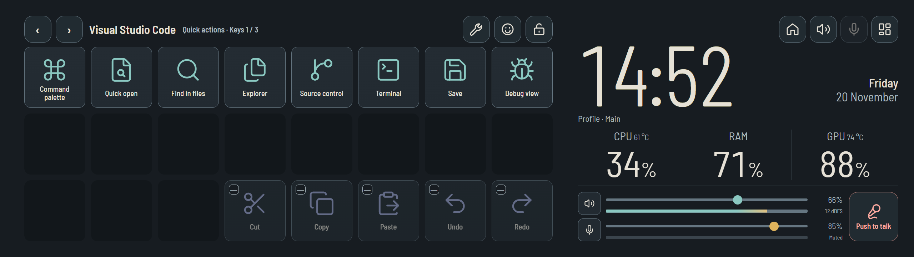

Shortcuts for the active app
The deck follows 446 Windows and installed web apps, including Visual Studio Code, Claude Desktop, SOLIDWORKS, KiCad, and Altium Designer. Automatic packs fill each screen before opening another. The last five cells always hold the editing controls. Version 0.2.8 includes 37 Linux profiles.
Configure app shortcut pages · Watch the page switcher